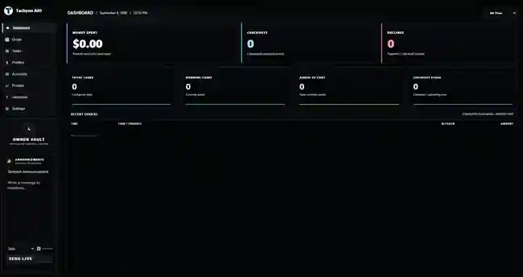
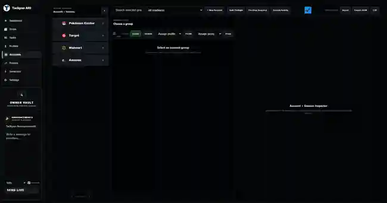

Built for
the drop.
Tasks, profiles, accounts, proxies, and core tools in one focused Windows workspace—built around the four retailers Tachyon supports.

Four retailers. One focused AIO.
Tachyon is built around the retailers we actually support—not a wall of modules you never use.

Everything stays
under control.
Tachyon keeps the parts of your setup together so you can spend less time jumping between tools and more time managing the drop.
Organized task groups
Keep retailer task groups structured and accessible from one consistent interface.
Profiles where you need them
Manage profile data from the same workspace instead of maintaining separate tools.
Account + session control
Organize retailer accounts, session state, readiness, and assignment from one place.
Proxy management
Keep proxy configuration close to the tasks and accounts that use it.
Core tools built in
Access Tachyon utilities without breaking your workflow or leaving the application.
Live visibility
Track task activity, checkout events, spend, cart state, and recent order activity at a glance.
The workspace.
Not a mockup.
Real Tachyon screens from the Windows app. Everything stays in one place so you can move between monitoring, tasks, accounts, and checkout activity without bouncing between tools.
Your command center.
See active tasks, checkout activity, spend, carts, checkout-stage progress, and recent orders at a glance.

Retailer task groups, organized.
Create and manage retailer task groups from one focused view for Pokémon Center, Target, Walmart, and Amazon.

Accounts and sessions in one place.
Keep retailer accounts grouped, inspect session readiness, and manage the pieces your tasks depend on without leaving Tachyon.

Start small.
Commit when ready.
Longer commitments reduce the initial access fee. Founders Lifetime is capped at 100 memberships.
- First month included
- $20 one-time access fee
- Lowest upfront commitment
- Three months included
- Reduced $10 access fee
- Recommended starting plan
- Full year of access
- No initial access fee
- Renews annually
- One-time payment
- 100 memberships maximum
- Commercially supported lifetime
The important stuff.
Billing, access, and what each membership actually includes.
Which plan should I choose?
Monthly has the lowest upfront cost. 3 Month is our recommended option with a reduced initial fee. Annual removes the initial fee completely. Founders Lifetime is one payment with no renewals.
Why is the initial fee lower on longer plans?
Longer commitments get better upfront pricing. Monthly includes a $20 initial fee, 3 Month includes a reduced $10 fee, and Annual has the initial fee completely waived.
Do memberships automatically renew?
Yes, except Lifetime. Monthly renews at $29.99/month, 3 Month at $89.99 every 3 months, and Annual at $349/year. Founders Lifetime is a one-time $499 payment.
What happens if I cancel?
Cancelling stops future renewals. Access ordinarily remains active until the end of your already-paid billing period. Cancellation does not automatically refund the current period.
What does Founders Lifetime mean?
Founders Lifetime provides access for Tachyon's commercially supported lifetime. It does not guarantee permanent availability of every retailer, feature, integration, or third-party service.
Are purchases or profits guaranteed?
No. Tachyon provides software access only. Inventory, payment approval, account decisions, order acceptance, third-party services, and market conditions are outside Tachyon's control.
One workspace.
Four retailers.
Get access through Whop, download Tachyon for Windows, and activate with your private membership key.
Choose your plan